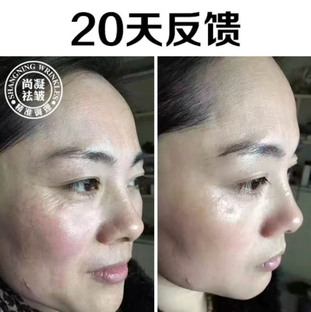
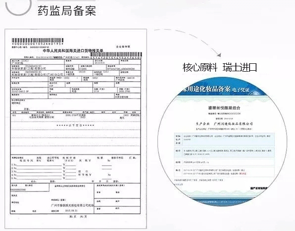
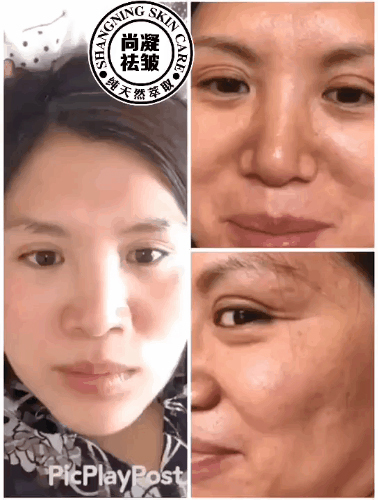
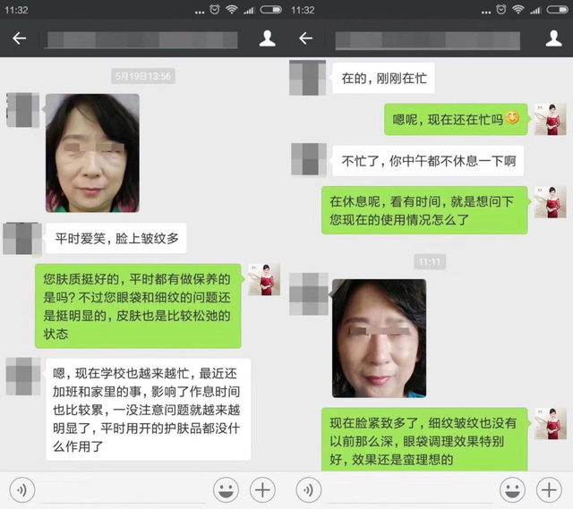

前7天水嫩弹滑。
锁水功能提升50倍，肌肤水分值在40%左右，皮肤塌陷的筛网结构开始弹起；
28天细白通透。
皱纹的痕迹变浅，变淡，面积逐渐缩小，皮肤白皙度平均提高2-6度。 ；
2个月细嫩亮白。
细纹消失，皮肤焕然一新，皮肤水分值50%以上，胶原蛋白含量达90%，肤质年轻水嫩无瑕疵，年轻10－25岁！
国际美容教母首次公开祛皱抗衰方法！28天成功修复皱纹！刷爆朋友圈！
2018-05-29

你还在为皱纹困扰吗？难道除了注射玻尿酸、脸上动刀，真的没有别的办法吗？ 今天，尚凝抗衰中心导师——郑明明（微信号： ←长按复制添加），教你不用打针、不动刀，如何28天轻松祛除皱纹！
30年专攻医学抗衰老
美容教母郑明明
引领中国祛皱抗衰风潮

郑明明——国际美容教母，国际专业美容师协会主席，世界十大知名美容女士、国际美容教母。曾担任刘晓庆、刘嘉玲、翁虹等明星的美容顾问。

▲自50年前至今，郑明明曾担任刘晓庆、刘嘉玲、翁虹等大牌明星的美容顾问
30年来，她一直在为美的事业而奋斗，她的祛皱抗衰方法， 已经为千万女性成功修复皱纹，无数年轻女性朋友，电视台主持人、影视明星争相使用，口碑效应爆棚，都说它跟以前所有用过的方法都不一样，紧致嫩肤、祛除细纹 效果堪比不用动刀的“拉皮手术”！
明星强势种草
"风靡娱乐圈的祛皱方法"
总是走在时尚前端的明星们，在亲身体验，见证了郑明明老师祛皱抗衰的神奇功效后，纷纷强势种草！

“前段时间总在户外主持，虽然涂了防晒霜，也抵挡不住阳光的伤害，皮肤暗黄还变得干燥，加上我额头和眼角原本就有细纹，录节目要化很厚的妆才能勉强遮住。正当我为之苦恼时， 我的化妆师给我推荐了郑明明老师祛皱抗衰方法，并且告诉我没有任何副作用，效果还特别好， 用了不到两个月，不仅皱纹抚平了，皮肤白嫩了，原来因为经常化妆导致的毛孔粗大，也变得细腻了。”

“在使用郑明明老师祛皱抗衰这个产品之前，眼角鱼尾纹明显，法令纹也挺严重的，自己用过很多祛皱保养的产品，可是都没有太好的效果。偶然一次机会，了解到郑明明老师的祛皱方法，听起来就想试一试， 至少知道是纯植物的，很安全，第一次用感觉很新鲜，往脸上一抹，一下子就渗透进去了， 用了一个月皮肤变细变紧了，水润白嫩，法令纹和眼角的细纹基本看不出来了，真的是一款冻龄神器啊”
想解决皱纹问题，想变美变年轻的女性朋友可添加微信： ，郑明明抗衰老团队会为你一对一解决皮肤问题，并提供各种实用护肤小妙招！
长按识别二维码，添加郑明明老师微信，
为你一对一解决皱纹问题
明星是靠脸靠颜值吃饭的，她们用的产品，质量肯定过关，所以大家用起来也非常放心。作为从业多年的专业护肤导师，郑明明老师（微信号： ←长按复制）已帮助千万女性修复皱纹等肌肤问题，下面，就让我们一起来看看郑明明老师的成功案例吧！
眼角纹、法令纹、抬头纹、川字纹
用一个，好一个！
典型案例1： 法令纹
35岁刘姐，常年忙于做家务，没时间护肤，脸上的鱼尾纹，抬头纹，法令纹慢慢的浮现出来...
意识在问题，质询郑明明老师的祛皱抗衰方案后，也很积极的配合，经过20天的呵护，脸上也水嫩很多，细纹也淡化了些，只要坚持，效果还会更加出乎意料！...

总结分析：像刘姐这个年纪的女性，非常容易长皱纹，特别是法令纹、鱼尾纹。皱纹的根源是胶原蛋白流失，皮肤缺少水分。 有皱纹的女性皮肤，都是偏干，容易起皱。所以，我的方法是，用人参肽、葡萄籽精华等专用配方， 补足胶原蛋白和水分，让肌肤弹润，同时还能美白、亮肤！加老师微信： 详细了解抗皱方法，朋友圈有更多抗皱妙招和真人案例。
典型案例2： 鱼尾纹
湖南长沙的张姐，42岁，张姐从小就爱笑，20来岁就长鱼尾纹了，看起来比同龄人都要老，一笑起来那道道皱纹让她苦不堪言，美容针打过，面膜也敷了不少，脸上的皱纹愣是纹丝不动，在她绝望之际，找到了我们。
总结分析：她的皱纹，属于表情纹，过于频繁的大笑会导致眼角的细纹形成记忆褶皱，祛皱时长要更久点，因为皱纹的根在真皮层！很多人盲目采用打美容针，打肉毒杆菌等方法，只是把短暂的把从表皮把皱纹撑起来，效果失去后，存在的皱纹还是存在那里。郑明明老师针对她的情况， 配置了一套深透抗皱组合，最后，她不但 鱼尾纹、法令纹化消失，连毛孔粗大的问题也改善了。想要不伤皮肤又能淡化皱纹，加老师微信： 一对一为你制定祛皱方案。
想解决皱纹问题，想变美变年轻的女性朋友可添加微信： ，郑明明抗衰老团队会为你一对一解决皮肤问题，并提供各种实用护肤小妙招！
长按识别二维码，添加郑明明老师微信，
为你一对一解决皱纹问题
深度揭秘
28天“抚平”皱纹，怎么做到的？
很多人问，为什么那么祛皱方法都没用，而这个方法却能短时间风靡全球，被无数人选择使用？
皱纹看起来只在皮肤表面，其实，它反映了真皮层下的皮肤情况。 传统方法都只能作用在表皮层，所以根本不能修复真皮层内断裂的纤维，皱纹还是存在。所以，必须让营养精华进入真皮层，从根源修复，才能对祛皱不反弹！

郑明明采用的是 小分子精华祛皱技术，在抗衰老实验室， 和中国化妆品制造之父蔡光欣博士一起，研制选用的是葡萄籽精华，它有超强的抗氧化能力， 能赶走导致肌肤衰老的自由基，还能深入真皮层，帮助胶原蛋白产生。

典型案例3： 皮肤松弛
52岁的玲姐皮肤松弛下垂，眼周皱纹、法令纹、川字纹，一览无余，用了很昂贵的护肤品和护肤方法，都无济于事。直到玲姐用上郑明明老师的方法，用一次她就直呼神奇，脸上各种皱纹变浅，皮肤透亮好几度。连用3个月，重回30岁。半年用下来，不但脸上找不一条纹，连苹果肌都比原来饱满了。

总结分析：皮肤松弛是皱纹的主要形成原因，随着年龄的增长，皮肤的变薄、组织的萎缩。郑明明给她定制用的是一系列的祛皱组合， 30天左右，皱纹慢慢变浅，50-70天，皮肤变得光滑，整个人看起来年轻了10岁，结果让她非常满意。 加老师微信： ， 一对一定制抗皱方案，教你轻松祛皱不反弹
不动刀，不去美容院
7天起效，28天抚平皱纹
美丽无须“大动干戈”
到现在为止，全国已经有千万人用郑明明老师的方法成功抗皱，她们纷纷反映：
前7天水嫩弹滑。
锁水功能提升50倍，肌肤水分值在40%左右，皮肤塌陷的筛网结构开始弹起；
28天细白通透。
皱纹的痕迹变浅，变淡，面积逐渐缩小，皮肤白皙度平均提高2-6度。 ；
2个月细嫩亮白。
细纹消失，皮肤焕然一新，皮肤水分值50%以上，胶原蛋白含量达90%，肤质年轻水嫩无瑕疵，年轻10－25岁！

7天肌肤紧致
30天眼纹眼袋淡化
使用郑明明老师的方法，刚开始使用7天就会感觉脸部紧绷，使用30天后，眼袋、鱼尾纹都淡化了。
提拉紧致表情纹
28天法令纹淡化
可以看到脸部皱纹的改变，皮肤变得紧致平滑，嘴角周围的深层法令纹都慢慢淡化了。

眼角干纹
补充眼肌所需养分，肌感轻盈饱满，保护眼肌免受到伤害。
嘴角/法令纹
使用后对嘴角皱纹有了改良，嘴角细纹淡化了。
抚平脖颈纹
脖颈纹一直是比较难淡化的，但是使用郑明明去皱产品也能很好的祛除脖颈纹。
经 2443522例使用者测试反馈， 在短短4周内，可以感觉到皱纹的变浅。无论是抬头纹、眼角纹、法令纹，还是皮肤松弛，都可以立刻添加郑明明老师微信： ，马上变身“冻龄美人”。

长按识别二维码，添加郑明明老师微信，
为你一对一解决皱纹问题
独家纯天然专利技术
拒绝一切添加剂
引领无添加护肤浪潮
近年来，全球掀起反添加剂运动，由食品波及到各个领域。添加剂不仅减低产品活性，日积月累沉积在皮肤里，还会导致各种肌肤问题。 现在，无伤害、无添加、无副作用产品成为潮流所向。
▲郑明明老师作为美容业的领头羊，在安全领域率先突破，其产品检测报告显示： 不含铅汞、激素、防腐剂和一切添加剂， 多项安全指标超越国家标准近百倍，就连孕妇、重度敏感肌肤都能放心使用。
更多真实档案曝光
上千万女性成功“换脸”

案例档案：鱼尾纹+细纹
黄英，30岁
“我二十几岁眼角就开始长皱纹了，做过美容，没什么效果，生完小孩以后， 脸上的皱纹比以前更深了，而且皮肤暗沉，简直是黄脸婆后来用了郑明明老师的皱纹修复方法，感觉皮肤就白了，细了，皱纹也淡化了，现在整个脸光滑有弹性，白了不少！ 鱼尾纹没了，怎么笑都年轻！希望每个人都能抗皱成功。”
案例档案：眼角下垂+法令纹
陈玉梅，45岁
已经45岁的陈姐，半年前陷入婚姻危机，老公嫌她年老色衰，满脸皱纹，吵着要离婚，她试过很多方法都没用；后来陈姐女儿通过朋友找到郑明明老师制定了一套针对性的抗皱方案， 一个多月时间，皱纹消失，皮肤干净透亮，整个人看起来年轻了十岁都不止，跟女儿站在一起就像姐妹花，老公再也不提离婚了。加郑明明老师团队微信号 一对一咨询，帮你轻松祛除皱纹。
成功修复皱纹后微信发来反馈：


除皱抗衰有方法
找对方法很简单
再次提醒：只要添加微信，联系郑明明老师，就一定能修复皱纹，还你一张白皙水嫩的脸！ 所以在1对1咨询过程中，请一定要谨记以下两点：
1、向老师如实告知自己目前的肌肤状况（有照片效果更佳），以及想要达到的效果，这样既能保证老师能给出准确的肌肤护理方案。
2、一旦收到肌肤护理方案，请一定要配合老师的叮嘱进行使用。如在过程中有任何疑问，可随时在微信上联系老师。
一把钥匙开一把锁！要想祛皱，就要根据个人肤质，制定针对性的祛皱方法来解决！否则，你再努力，花再多的钱都是白费功夫，瞎折腾。现在加郑明明老师团队微信 XXXX 一对一咨询，帮你轻松祛除皱纹。
长按识别二维码，添加郑明明老师微信，
为你一对一解决皱纹问题

珂珂
上个月加郑明明团队老师微信号 ，她的方法对祛皱效果很好哦，一对一的服务也是非常的贴心，真心感谢！这是我的丑照，鼓足勇气才发的，大家鼓励一下吧！


黄小邪的黄
我之前脸上的皱纹比较严重，前几年，看到各种广告，自己胡乱琢磨用过各种方法和产品，有些是用重金属祛皱的，见效很快，但是不用很快就反弹了，皱纹比以前还 重，更黑了，前后折腾了好几年，除了眼睛，整个脸红彤彤的，简直毁容了，走到哪里都带着帽子，感觉人生从此灰暗绝望！用了郑明明老师的方法，2个月，红肿居 然消退了，皱纹也变淡了很多。看着镜子里的自己，一天谈在改变，感觉人生又重新开始了。郑明明老师，谢谢。

搜菲菲
我真是深深感受到了别人说的祛皱等于整容是什么意思，祛皱后，爱情事业都超顺！像是开了挂一样！感谢郑明明老师。


shangyu
我是生孩子后长的眼角纹，当时也没当回事，现在32岁了，皱纹越来越深。去年尝试过去美容院，已反弹。后来加了郑明明团队微信号 ，现在皮肤比祛皱前还要好。

杨阿hin
真的很好，本人答应效果好给郑明明老师做宣传的，上照片了。


绿海
第一次使用郑明明老师的方法，用了以后脸上的皱纹很快就变淡了，也没有过敏现象，相信坚持用上一个月效果会更好的，哈哈
笑米
最近在哪个卫视上好像见过这位郑明明老师，是访谈节目，教别人如何预防皱纹形成的。已经加郑明明老师微信了，看到朋友圈好多人 用好了，前后对比照片，好震撼，那么多皱纹比我严重的都好了，真是心痒痒啊！
澄明之瞳
昨天刚开始用郑明明团队老师微信号 的祛皱方案，本人超级敏感肌，皮肤未过敏，惊喜，继续使用中···她的方法对祛皱效果很好哦，一对一的服务也是非常的贴心，真心感谢！这是我的丑照，鼓足勇气才发的，大家鼓励一下吧！

webrre
已经用了15天了，妊娠纹变淡了不少，现在还有一点点印子，不注意基本上看不出来。郑明明团队真的很专业，每隔几天就主动问我的情况，之前听一个闺蜜介绍的， 她用得早，现在水嫩白皙的，一点问题都没有。当初真的很害怕有副作用，现在看来很靠谱，很温和，一点刺激都没有，用好了我会多宣传的。

|
点击加微信教你去皱秘籍 |